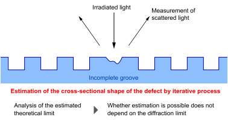
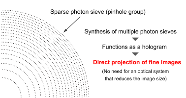
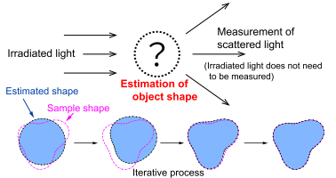
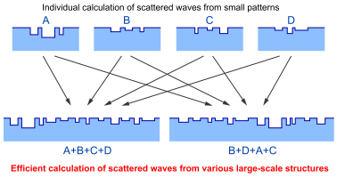
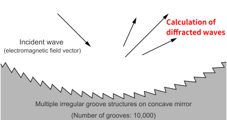
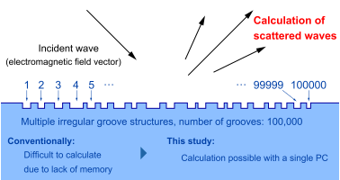
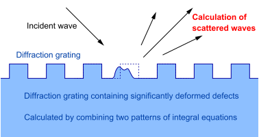
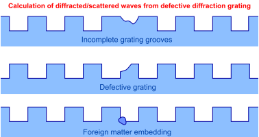

Research Achievements
We introduce some of the main research results that we have published till date. Please refer to the Researchmap website for our other achievements.
Researchmap (Publications: 44 / Lectures and oral presentations: 75)
Profile reconstruction of a local defect in a groove structure and the theoretical limit under the vector diffraction theory
Optics Express, 28(21), 30908-30927 (October 2020)

We have proposed a method to estimate the cross-sectional shape of microdefects on the surface of the diffraction grating using the scattered waves of irradiated light. While the limit of an object that can be seen with an optical microscope is known as the diffraction limit, estimating the defected shape beyond the diffraction limit is possible by analyzing the defect and scattering phenomenon occurring around it. We have demonstrated how to analyze the estimable shape and its theoretical limits and predict what percentage of the system can be estimated.
Lensless computer-generated hologram with wavelength-order resolution consisting of photon sieves
Journal of Optics, 22, 105606 (September 2020)

We have proposed a hologram that projects a fine-line image using a perforated thin film known as sparse photon sieve (photon sieve hologram). Projecting a fine image with a conventional hologram required a lens such as a reduced projection optical system. As photon sieve holograms can directly generate fine images, they can also produce images even with UV rays and X-rays, with which constructing optical systems is difficult.
Reconstruction of scatterer shape from relative intensity of scattered field by using linearized boundary element method
IEICE Transactions on Electronics, E103-C(2), 30-38 (February 2020)

We have proposed a method of irradiating fine particles with light and estimating the shape of the surface of fine particles from the scattered waves. Traditionally, making preliminary arrangements such as measuring the intensity (brightness) of light being irradiated on the fine particles was necessary, but in this paper, we proposed a method for estimating the particle shapes without making such preparations. Even if the brightness of the irradiated light fluctuates during measurement, it is possible to realize stable measurements without the results being affected.
Field-stitching boundary element method for accurate and rapid vectorial diffraction analysis of large-sized one-dimensional diffractive optical elements
Optics Express, 26, 20023-20039 (August 2018)

Complex uneven patterns are processed on the surface of photomasks and diffractive optical elements. These elements may comprise few "Small pattern" combinations. In this paper, we calculated the scattered waves of small patterns that make up the element to efficiently calculate the scattered waves from such an element. The scattered wave from the target element can be calculated by combining the scattered waves from small patterns. Meanwhile, simply adding up the scattered waves from small patterns will increase the error and cause irregularity at the pattern joints. Therefore, in this study, we added a component called stitching field to prevent inconsistencies. It will be possible to easily calculate scattered waves from various patterns of unevenness, just as diverse and complex courses can be created by combining railroad track parts of model railroads.
Fast actual-size vectorial simulation of concave diffraction gratings with structural randomness
Journal of the Optical Society of America A, 34(12), 2157-2164 (December 2017)

By devising the difference-field boundary element method (DFBEM) and the procedures of calculation, analyzing the real-size diffraction grating has become possible. In this paper, we calculated the diffracted waves from the diffraction grating processed on the surface of the concave mirror. As an example of application, we quantitatively analyzed the property where the diffracted wave attenuates depending on the irregularities in the grooves of the diffraction grating.
Efficient Analysis of Diffraction Grating with 10000 Random Grooves by Difference-Field Boundary Element Method
IEICE Transactions on Electronics, E100C(1), 27-36 (January 2017)

The differential-finite boundary element method has made it possible to efficiently calculate scattered waves from a diffraction grating that has lost its periodicity. In this paper, we devised a calculation procedure to calculate the diffracted waves from a large-scale element with 10,000 irregular grooves. Normally, a large computer is required for an analysis of this scale, but with this method, analysis can be performed even on a common PC without a heavy burden.
Efficient Scattering Analysis of Arbitrarily Shaped Local Defect in Diffraction Grating
IEICE Transactions on Electronics, E99C(1), 76-80 (January 2016)

The difference-finite boundary element method can efficiently calculate the scattering of electromagnetic waves (light) via a defective diffraction grating. However, the integral equation used in this method depended on the shape around the defect, and deriving the integral equation each time the shape changed was necessary. In this paper, we showed that by dividing the defect area, and calculating various defect shapes by only combining the integral equations of basic numerical patterns is possible.
Expansion of the difference-field boundary element method for numerical analyses of various local defects in periodic surface-relief structures
Journal of the Optical Society of America A, 32(5), 751-763 (May 2015)

We proposed a method for efficiently calculating the scattering of light (electromagnetic waves) from a defective diffraction grating. When there are defects on a diffraction grating, the assumption that the shape of its surface is periodic no longer holds, and the computational resources required will be extremely large. Here, we used a technique called the difference-finite boundary element method to reduce the amount of computation and the memory consumption. We raised three specific types of defects, namely, (1) incomplete grating grooves, (2) defective grating and (3) foreign matter embedding as examples and showed that highly precise scattered-wave distributions can be calculated.